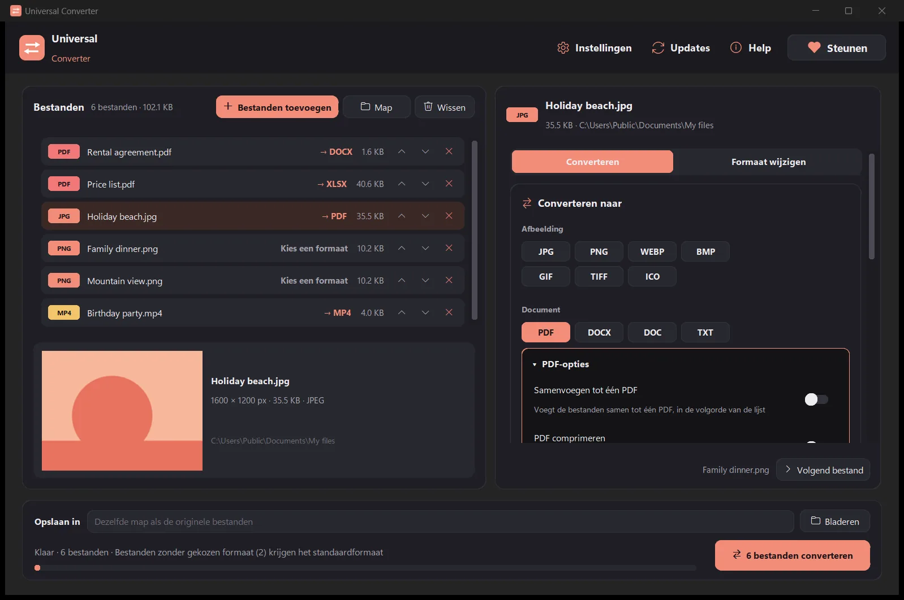
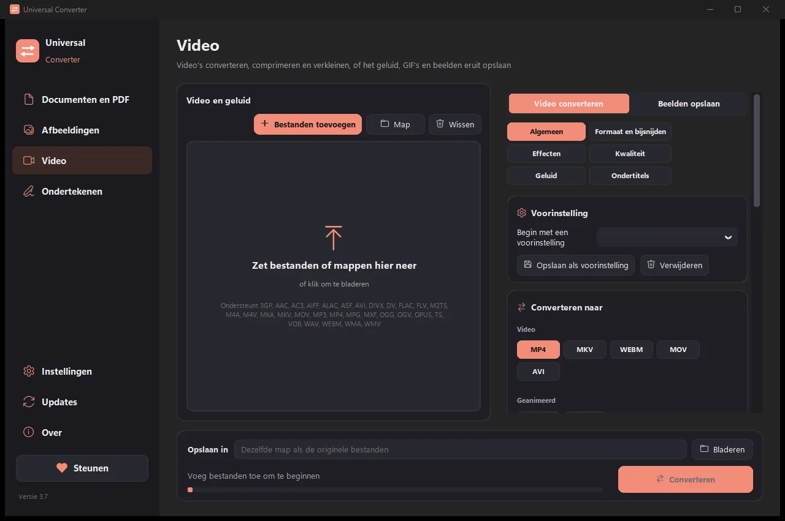
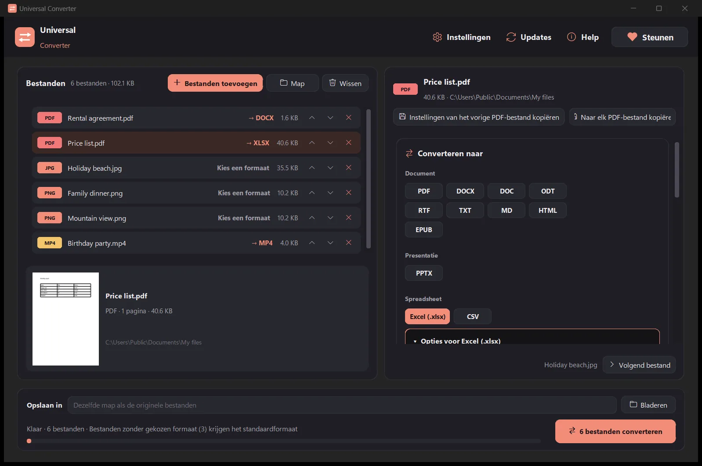
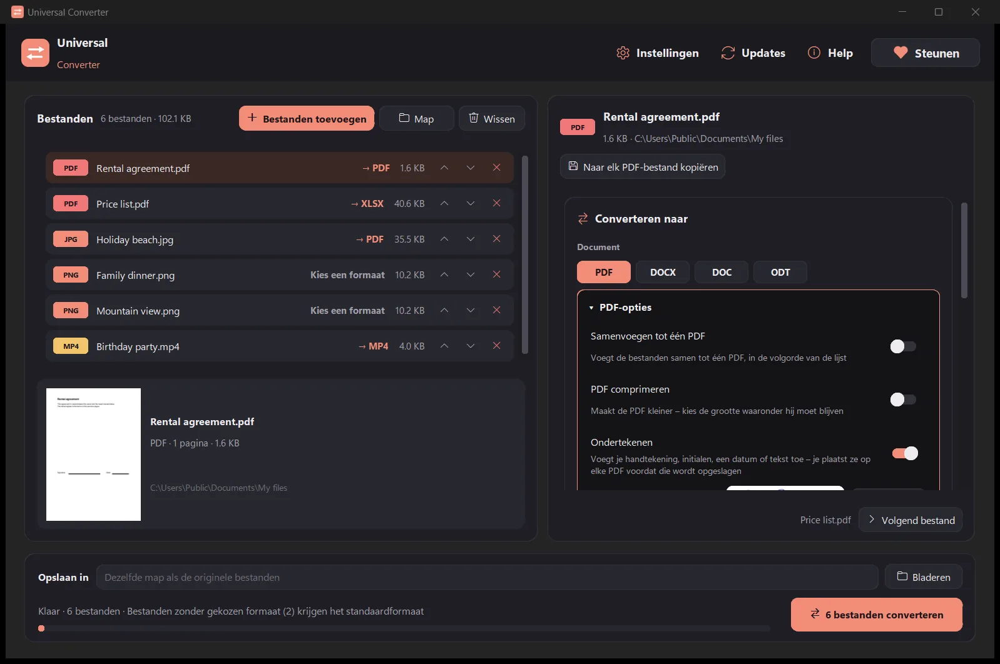
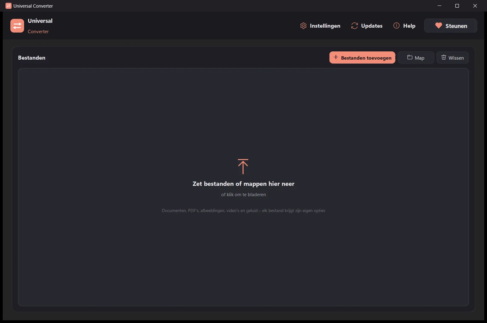

Converteer je bestanden op je eigen apparaat
Afbeeldingen, documenten, video en geluid, PDF's en tabellen naar Excel, allemaal in één app. Er wordt niets geüpload: je bestanden verlaten je apparaat nooit.
Installeren en bijwerken
- Open het gedownloade .dmg-bestand en sleep Universal Converter naar Apps.
- Open de app. De eerste keer blokkeert macOS hem omdat hij niet door Apple is ondertekend: klik op Gereed.
- Open Systeeminstellingen > Privacy en beveiliging, scrol omlaag, klik op Toch openen en voer je wachtwoord in. Dit doe je maar één keer.
Updates: als je het toestaat wanneer de app voor het eerst opent, zoekt hij bij elke start naar nieuwe versies, controleert hij hun digitale handtekening en installeert hij ze wanneer jij dat kiest.
Installeren en bijwerken
- Tik op je telefoon op Downloaden voor Android.
- Open het gedownloade bestand. Als Android erom vraagt, sta je browser of bestandsbeheerder toe apps te installeren.
- Tik op Installeren.
Updates: de app zoekt ongeveer één keer per dag en meldt het als er een nieuwe versie klaarstaat. Download die op dezelfde manier en installeer hem over de oude; je instellingen blijven bewaard.
Installeren en bijwerken
- Download het .AppImage-bestand.
- Maak het uitvoerbaar: klik er met de rechtermuisknop op, open Eigenschappen > Rechten en sta toe dat het als programma wordt uitgevoerd (of in een terminal: chmod +x Universal-Converter-*.AppImage).
- Dubbelklik erop. Er wordt niets geïnstalleerd: de app is dit ene bestand.
Updates: als je het toestaat wanneer de app voor het eerst opent, zoekt hij bij elke start naar nieuwe versies, controleert hij hun digitale handtekening en vervangt hij het AppImage-bestand waar het staat.

Privé
Alles draait op je apparaat. Geen uploads, geen wachtrij, geen limieten voor de grootte.
Gratis
Gratis te gebruiken, zonder advertenties, zonder account en zonder watermerk.
34 talen
Engels, Grieks, Spaans, Italiaans, Duits, Frans, Portugees (Portugal en Brazilië), Pools, Russisch, Arabisch, Hebreeuws, Chinees, Japans, Koreaans, Tamil, Afrikaans, Yoruba, Hausa, Hindi, Indonesisch, Turks, Vietnamees, Zweeds, Nederlands, Deens, Oekraïens, Tsjechisch, Roemeens, Bulgaars, Noors, Maleis, Filipijns en Swahili.
Vijf hulpmiddelen in één venster

Documenten en PDF
Converteer tussen PDF, Word, ODT, RTF, TXT, Markdown, HTML, EPUB, PowerPoint en Excel. Maak afbeeldingen van pagina's en voeg meerdere bestanden samen tot één PDF. Lettertypen, groottes en kleuren blijven behouden. Maak PDF's kleiner, tot de grootte die je kiest. Scans en ingevulde formulieren worden bewerkbare tekst en tabellen, ingedeeld zoals de pagina. Tabellen, ook zonder lijnen zoals op bankafschriften, komen in Word als echte tabellen, en oude Word-bestanden (.doc) en PowerPoint-bestanden (.ppt) gaan open.
Afbeeldingen
Converteer tussen JPG, PNG, WEBP, TIFF, BMP, GIF en ICO. Wijzig het formaat in pixels, procenten of bestandsgrootte, voeg afbeeldingen samen tot een PDF- of Word-bestand en lees de tekst in afbeeldingen (OCR). Ook PDF's kunnen worden toegevoegd: elke pagina wordt een afbeelding.

Video
Converteer video's tussen MP4, MKV, WebM, MOV en AVI en comprimeer ze, met AV1, H.265, H.264 of VP9. Kort in, snij bij, draai en wijzig het formaat, maak GIF's, sla beelden op als afbeeldingen of houd alleen het geluid over als MP3, M4A, AAC, FLAC, WAV, AIFF, OGG, AC-3, MP2, WavPack, MKA, CAF of Opus. Bij meerdere video's kan elke video eigen instellingen hebben. Op Android: MP4, MKV, WebM, MOV of GIF, of het geluid als MP3, M4A, AAC, OGG, Opus, FLAC, WAV, AIFF of MKA; inkorten, bijsnijden, draaien, het formaat wijzigen en beelden opslaan.

Excel
Haal tabellen uit PDF's, scans en foto's naar Excel of CSV: bankafschriften, facturen, prijslijsten. Leest Grieks, Engels, Spaans en meer dan 30 andere talen.

Ondertekenen
Onderteken PDF's en vul formulieren in. Typ je naam in een handschriftstijl, teken je handtekening of gebruik er een foto van. De app vindt de handtekeningregels zelf, of je klikt of tikt waar de handtekening, initialen, datum, tekst of vinkjes moeten komen. Onderteken veel bestanden tegelijk; de originelen blijven onaangeroerd.
- Gebruikt je videokaart voor video wanneer dat kan: meestal 5 tot 20 keer sneller.
- Sleep hele mappen erin: alle bestanden worden in één keer geconverteerd.
- Eén scherm voor alle bestanden: voeg documenten, afbeeldingen en video's samen toe, en elk krijgt zijn eigen opties.
- Meldt nieuwe versies; op Windows, Mac en Linux kan hij ze voor je installeren, digitaal gecontroleerd.
- Lichte en donkere weergave, passend bij je apparaat.
Zo werkt het
- Open Universal Converter.
- Sleep je bestanden of een hele map naar het venster, of klik op Bestanden toevoegen.
- Klik op Converteren. De nieuwe bestanden worden naast de originelen opgeslagen, of in de map die je kiest.

Wat hij kan
- Een PDF converteren naar Word
- Word-documenten converteren naar PDF
- Meerdere bestanden samenvoegen tot één PDF
- Een PDF comprimeren tot een grootte die je kiest
- Een PDF comprimeren tot 100 KB, 200 KB of elke grootte voor online formulieren
- PDF-pagina's converteren naar JPG-afbeeldingen
- Een gescand document omzetten in een bewerkbaar Word-bestand
- Afbeeldingen converteren tussen JPG, PNG, WEBP en meer
- Het formaat van afbeeldingen wijzigen of ze verkleinen tot een bestandsgrootte
- Een foto of handtekening verkleinen tot 20 KB, 50 KB of exacte pixels
- Foto's samenvoegen tot één PDF
- JPG naar PDF onder 100 KB
- De tekst uit een afbeelding kopiëren (OCR)
- Een video comprimeren zonder hem te uploaden
- Video's converteren tussen MP4, MKV, WebM, MOV en AVI
- Het geluid van een video opslaan als MP3
- Een GIF maken van een video
- Tabellen uit een PDF naar Excel halen
- Een bankafschrift in PDF converteren naar Excel
- Tabellen uit PDF-facturen naar Excel halen
- Een PDF ondertekenen
- Een PDF-formulier invullen
Vragen
Is hij echt gratis?
Ja. Universal Converter is gratis te gebruiken, zonder advertenties, zonder account en zonder tijdslimiet. Als hij je helpt, kun je de ontwikkeling steunen met een vrijwillige bijdrage, maar dat hoeft nooit.
Worden mijn bestanden ergens geüpload?
Nee. Elke conversie gebeurt op je eigen apparaat, dus hij werkt ook zonder internetverbinding. De app gaat alleen online om naar updates te zoeken, om de alfabetten voor tekstherkenning te downloaden die je kiest en, als je dat toestaat, om anonieme foutrapporten te sturen.
Is downloaden veilig?
Ja. Voordat ze op deze pagina komen, worden de downloads voor Windows, Mac, Linux en Android van elke versie op VirusTotal door ongeveer 60–70 antivirusprogramma's gescand; de link onder elke downloadknop opent het rapport van dat bestand. De app toont geen advertenties en verzamelt geen persoonsgegevens, en de versie in de Microsoft Store wordt ook door Microsoft gecontroleerd en ondertekend.
Windows toont een SmartScreen-waarschuwing. Is dat normaal?
Ja. Het installatieprogramma heeft nog geen codehandtekening, dus Windows herkent het niet. Kies "Meer informatie" en dan "Toch uitvoeren". Updates daarna worden door de app zelf digitaal gecontroleerd. Of installeer hem uit de Microsoft Store, die geen waarschuwing toont.
Hoe open ik hem op een Mac?
Open het gedownloade bestand en sleep Universal Converter naar Apps. De app is niet door Apple ondertekend, dus de eerste keer dat je hem opent, blokkeert macOS hem: klik op Gereed, open dan Systeeminstellingen > Privacy en beveiliging, klik op "Toch openen" en voer je wachtwoord in. Dit doe je maar één keer.
Hoe installeer ik hem op Android?
Download de APK op je telefoon, open hem en sta de installatie toe als daarom wordt gevraagd (Android 10 of nieuwer). Alle 34 talen zijn ingebouwd; kies er een in de Instellingen van de app. De app meldt het als er een nieuwe versie is.
Welke talen spreekt hij?
De app is er in het Engels, Grieks, Spaans, Italiaans, Duits, Frans, Portugees (Portugal en Brazilië), Pools, Russisch, Arabisch, Hebreeuws, Chinees, Japans, Koreaans, Tamil, Afrikaans, Yoruba, Hausa, Hindi, Indonesisch, Turks, Vietnamees, Zweeds, Nederlands, Deens, Oekraïens, Tsjechisch, Roemeens, Bulgaars, Noors, Maleis, Filipijns en Swahili. Je kiest in het installatieprogramma, of later in Instellingen.